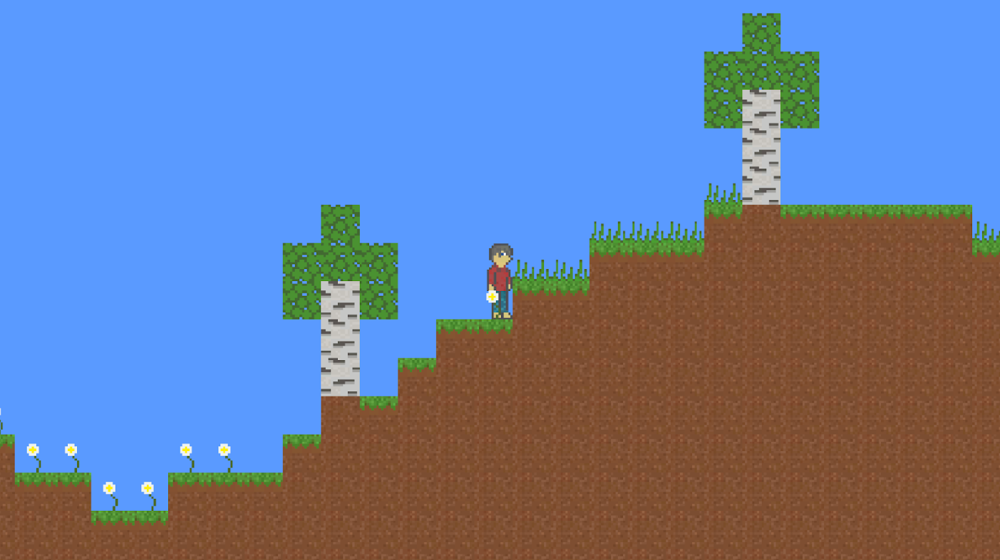
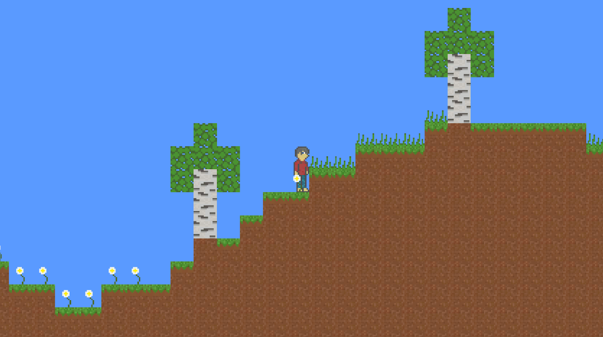

Jack Delahunt
Contact and information
Full CV
Github
Phone: 07598 298889
Email: jdealhunt@gmail.com
Location: London, United Kingdom
About me
Graduated in Applied Computing (Game Development) from The Waterford Institute of Technology (SETU) in Ireland. Worked for Red Hat as an intern and full time for some time.
Now living in the UK to try something new. I have been programming for half my life and have many areas that excite me. I enjoy writing low level and performance critical code.
I have listed some projects showcasing some explorations I have done in this area in the form of Games/Game Engines. I also have an interest in programming language creation, linked below.
Please get in contact for things such as hiring opportunities or just find the things I have done interesting and want to talk about them.
Notable projects
- Handmade 3D game engine in C++
- OpenGL renderer using defered rendering with multiple render passes for geometry, lighting, shadows and screen space ambient occlusion (SSAO)
- Using Phong lighting for a mix of ambient, diffuse and specular lighting effects
- Shadows are acheived by shadow mapping, the geometry is rendered from the sun's position which gives positional data of each fragment relative to the sun
- SSAO is two steps, the first using the geometry pass output data to find areas to occlude and output to a texture
- The SSAO is then blurred to reduce artifacts and noise
- The lighting pass then combines the scenes albedo, lighting and SSAO
- A final post processig step is applied for gamma correction
- A voxel mesh is dynamically updated by user provided tools for editing the mesh geometry and colours
- A mesh can also be generated by the use of noise with many options to create unique structures
- Tools for loading and saving a mesh is provided and the base game comes with an example on startup
2D dynamic lighting demo - Download Repo
- Handmade 2D game engine in C++
- OpenGL renderer with three render passes
- First render pass to draw unlit scene, colour, depth, normal and water buffers are filled from this pass
- Second render pass to add screen space lighting, sampling from the normal buffer gives the lighting a more 3D look
- Third render pass is for water reflection, lit scene is sampled and reflections are filled in based on fragment position
- Animated textures for the bat, download and run to see
- Once loaded, albedo and normal textures are packed into an atlas before being sent to GPU
- I am not an artist so the assets are sourced from here, however all normal maps were added by hand
Custom 2D renderer demo - Download Repo
- Handmade 2D game engine in C++
- OpenGL renderer with multiple render passes
- First render pass to draw unlit scene with colour and depth information
- Second render pass to add screen space lighting, both global lighting and point lights
- Third render pass for post-processing effects, like blur on depth information and vignette
- Particle effects for falling leaves
- Animated textures for lamps and smoke, download and run to see
- Once loaded textures are packed into an atlas before being sent to GPU
- Ambient sound
- I am not an artist so the assets are sourced from here, I did some tweaking like added animations for lamps and expanding the animation on the shop
Arcade dungeon crawler - Download Repo
- 2D game engine in Odin
- Renderer uses OpenGL as a backend, with features like drawing basic primatives, textures and text rendering
- Built in live/savable level editor using ImGUI for editor controls
- All entities are editable and entire levels are savable and re-loadable at runtime
- Hot reloading of textures and audio
- 2D game engine in Odin
- Sokoban style puzzle game with 14 unique levels with different puzzle objects like teleporters and lights
- Renderer uses OpenGL as a backend, with features like drawing basic primatives and text rendering
- Levels saved as editable text files and parsed by game when loading

Aracade survival horde shooter - Download Repo


Liam Compiler - Repo
 


Scuba Duper Diver - Play